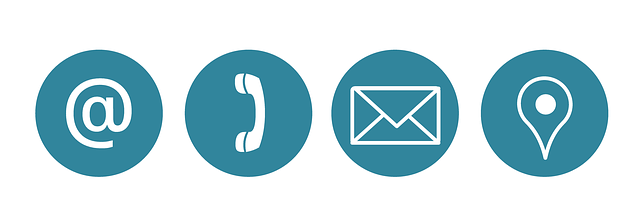

Solo 4 de 10 personas leen email marketing + Líneas de Asunto
Publicado el septiembre 15, 2019

Casi el 60% de clientes potenciales por correo electrónico, solo leen el asunto del mensaje y lo pasan sin ver el contenido, según estudio. Especialistas como James Brockbank, piensan que las líneas de asunto en correos electrónicos podrían estar matando la posibilidad de éxito en una campaña de marketing online Costa Rica..
Los correos electrónicos, son una ventana conversacional entre tú y el cliente. La apertura de un buen mensaje con campaña de Marketing Costa Rica genera lecturas, divulgación, receptividad del destinatario y con suerte enlaces de calidad hacia tu sitio web.
Líneas de asunto para maximizar la tasa de apertura de mensajes
Escribir líneas de asunto para correos electrónicos, no es tan sencillo. Se necesita tiempo y mucho esfuerzo para lograrlo. Si tu línea de asunto no motiva al destinatario abrir el mensaje, es posible que hayas perdido la posibilidad de un enlace hacia esa publicación.
Mejorar la tasa de apertura de correos con campañas de marketing online Costa Rica es uno de los objetivos. Para ello, analizamos el estudio de James Brockbank; con más de 10 años de experiencia y más de 100 campañas por año en los últimos 3 años.
Cálculo de la tasa de apertura promedio
Para calcular el porcentaje de apertura promedio ó (tasa de apertura promedio) existen varias herramientas online. Entre ellas, Pitchbox, Outreach.io y muchas más.
Estás aplicaciones, te darán señales para optimizar tu campaña de marketing online Costa Rica. Y no solo eso, sino que ofrecen una cifra precisa del número de personas que abrieron tu mensaje, en relación al total de clientes contactados.
Tras analizar datos de campañas entre 2015 -2018 con malas líneas de asunto, se pudo observar que solo el 23% de los destinatarios abría los mensajes de correo. Frente al 41% de tasa de apertura promedio en campañas del 2019.
Conclusión
Finalmente, es importante comprender la efectividad de escribir buenas líneas de asunto en mensajes de correo. En el siguiente post, daremos algunos consejos para escribir buenas líneas de asunto. Que de manera clara y concisa los destinatarios se sientan identificados con tu campaña.
También te puede interesar: Prácticas del Marketing Costa Rica que debes evitar para posicionarte en Google

Acerca de Gerardo Oporto Zúñiga
Coordinador de proyectos en Avotz Web Works Encantado de la vida y de este viaje tan hermoso llamado emprendedurismo, nada como hacer lo que uno más ama !! Con conocimientos en Administración de empresas, Mercadeo Digital, Certificado Google Analytics, Photoshop, After Effects, Adobe Premiere Pro, Diseño web, y usabilidad, entre otros